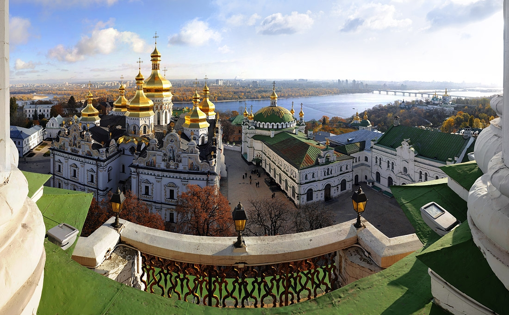
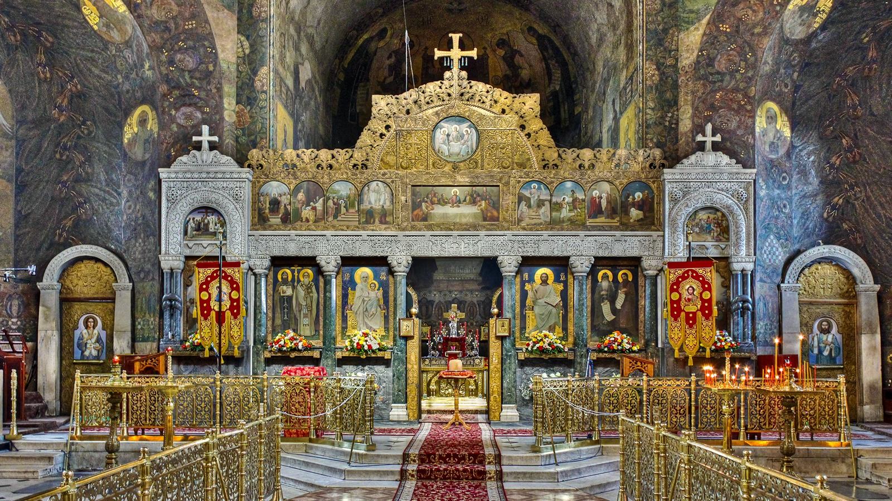
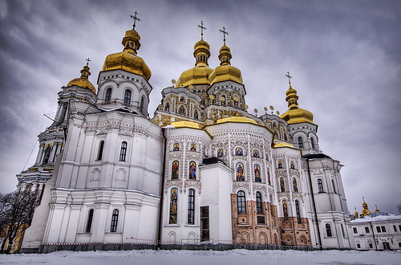

Пам'ятки України
Доба Київської Русі
6 - 13 століттяКиєво-Печерська лавра:
Час заснування:
1051 р.
Засновник:
за князя Ярослава Володимировича, ченцем Антонієм
Архітектурний стиль:
українське бароко
Місце розташування:
Київ
Вірування:
православ'я


1051 р.
Засновник:
за князя Ярослава Володимировича, ченцем Антонієм
Архітектурний стиль:
українське бароко
Місце розташування:
Київ
Вірування:
православ'я
Цікаві факти:
В XI ст. монастир став центром розповсюдження і затвердження християнства у Київській Русі. У XII ст. отримав статус «лаври» — головного великого монастиря. У XVIII ст. Києво-Печерська лавра стала найбільшим церковним феодалом в Україні
Разом із Софійським собором внесена до переліку Світової спадщини ЮНЕСКО. На території лаври діє Національний Києво-Печерський історико-культурний заповідник, якому було надано статус національного у 1996 р. Монастир Української православної церкви Московського патріархату зі статусом лаври знаходиться на території Нижній лаврі. Обидві частини лаври відкриті для відвідувачів
У теперішній час пам'ятка перебуває під юрисдикцією Національного заповідника.